惠昊开题报告
一、立论依据
1、课题来源、选题依据和立论背景
（1）课题来源、选题依据和立论背景
火焰温度的准确测量与标定是实现燃烧过程精细化控制的关键前提，在燃气轮机燃烧、钢铁冶炼、石英制造等关键工业场景中，火焰温度的精准调控直接关系到能源消耗、污染物排放与产品质量。工业生产对火焰标定提出了现场适用性、宽温度覆盖范围、高稳定性与可溯源性等核心要求，但传统火焰温度测量方法普遍存在局限性：接触式测量（如热电偶）易受燃烧环境腐蚀、辐射散热影响，无法复现工业燃烧的动态环境；非接触式光学测量（如激光诊断）虽避免了接触干扰，却缺乏统一的现场标定标准，导致测量结果难以溯源。这些问题严重制约了不同测量系统间结果的可比性与可靠性。
国际计量领域的技术革新为火焰标定突破提供了重要支撑。国际温标（ITS-90）的推广明确了温度测量的溯源性要求，欧洲计量创新与研究计划（EMPIR）资助的 EMPRESS、EMPRESS 2 等重点项目，将标准火焰标定技术推向实用化[1]。
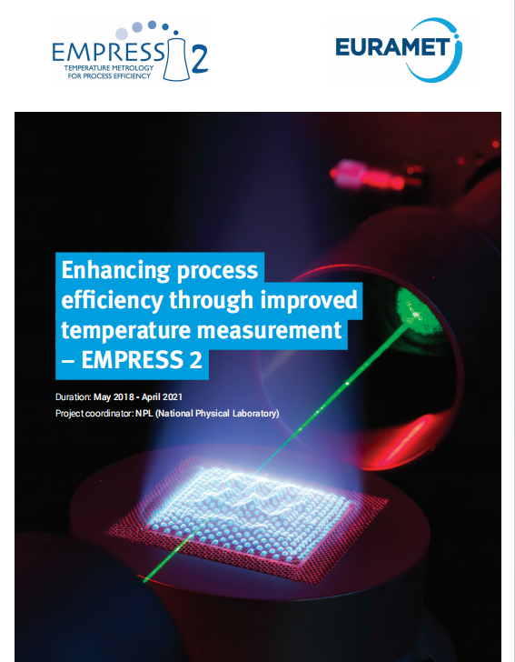
图 1 欧洲EMPRESS2项目.标准火焰作为可溯源、高稳定性的标定源，是连接基础计量标准与实际应用的关键纽带。标准火焰的用于标定的核心价值在于：为燃烧领域的温度测量提供可追溯的标定基准，解决传统测温技术没有标准可以依照的痛点；标准火焰作为一个桥梁可以将传统的热电偶测温与激光测量技术相连接，用标准火焰去标定激光测量的准确性；通过模拟真实燃烧环境的温度场与物种分布，为各类光学诊断技术提供精准的性能验证与误差校准，是优化测量精度的核心工具；通过提升温度测量精度，间接实现工业过程的精准控制，最终带来能耗降低、废物减少的经济效益与环境效益。
非预混平面绝热火焰炉的技术优势使其成为火焰标定的理想载体：其一，燃烧稳定性强，通过优化流体力学设计与氮气共流技术，可有效抑制外界气流干扰，确保温度场空间均匀性与长期重复性；其二，温度可溯源，借助激光瑞利散射等技术对炉内火焰温度进行精确表征，能够实现 2050K-2250K 温度范围的 ITS-90 溯源，测量不确定度可控制在 0.5% 以内。以非预混平面绝热火焰炉炉作为火焰标定源，可构建多温度点的均匀温度场，为火焰标定提供了标准化的参考环境[1]。
尽管火焰标定技术已取得显著进展，但仍存在待突破的理论与技术问题，其中高温极端环境下的温度覆盖范围有待拓展，现有以非预混平面绝热火焰炉作为标定源的的温度上限大约为2300K，当进一步升高温度时就会导致温度场的不均匀性增大，且内部结构容易出现烧蚀的问题；现有的火焰光谱仿真大都是用国际温标的数据，而国际温标中的数据基本都是通过电加热炉加热到预定温度后用热点偶进行测量，因此在光谱展宽（光谱展宽是指原子、分子或自由基的特征谱线并非理想的几何细线，而是因物理效应或仪器限制呈现出一定宽度的现象。）等方面与真实火焰的会有一定的差异，如图 2所示，实验数据与之前数据库的仿真就存在着一定的差异。因此，开展基于非预混平面绝热火焰炉的火焰标定研究，建立覆盖更广温度范围、适应复杂环境、具备溯源性的火焰标定体系，能为我国高端制造业的燃烧过程精准控制提供核心技术支撑，对降低能源消耗、减少污染物排放、提升产品质量具有重要的理论价值。
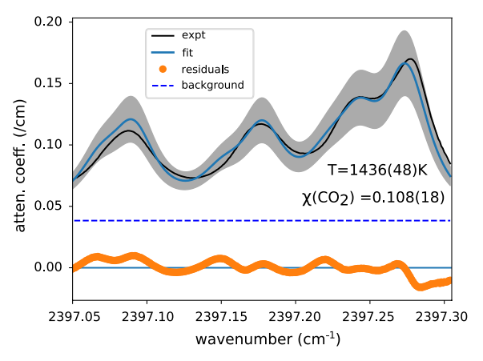
图 2 实验数据与仿真拟合的差异在全球双碳目标推进与能源结构转型的大背景下，火焰标定的工业应用价值愈发凸显，尤其在燃气轮机高效运行场景中，其作为连接计量标准与工业应用的核心环节，能够建立可溯源、高稳定性的燃烧状态基准。基于标准火焰标定的光学诊断技术，可实现燃烧室温度场的精准监测，破解燃气轮机燃烧控制精度不足的难题，进而延长涡轮叶片寿命、提升燃气轮机热效率；同时，燃气轮机常用的贫燃预混燃烧技术需精准控制当量比以降低NOₓ排放，而当量比偏差易引发燃烧不稳定，标准火焰恰好可用于验证燃气轮机低NOₓ燃烧器性能，通过对比红外成像与标准火焰温度数据，降低当量比控制误差，提升NOₓ排放达标率[2,3]。
除燃气轮机领域外，火焰标定还能显著提升氢能燃烧的稳定性与安全性。氢能燃烧具有燃烧速度快、温度高、点火能量低、易发生回火等特性，实际应用中常采用与天然气掺混的方式使用，但掺混过程中燃料组分波动会直接导致火焰当量比偏移，引发燃烧不稳定问题。火焰标定技术可精准模拟不同氢能掺混比例的燃烧场景，通过标定温度与物种浓度，为氢能燃烧系统提供统一标准。例如，在掺氢天然气燃烧场景中，借助标准火焰验证可调谐二极管激光吸收光谱系统，可实时修正因H₂比例波动导致的当量比偏差，提升燃烧稳定性；同时还能量化不同H₂含量下的燃烧极限，为探究贫燃熄火极限、闪回临界条件等关键参数提供支撑。
2、课题研究目的、理论意义和实际应用价值
（1）课题研究目的
针对当前非预混平面绝热火焰炉作为标定源仍然缺少对其火焰结构的详细测量和不能覆盖高温极端环境的问题，
1.重新设计非预混平面绝热火焰炉结构，添加水冷机构，更改喷嘴的排布，解决其不能在高温极端环境下稳定长久工作的问题，使非预混平面绝热火焰炉燃烧氢氧火焰温度更接近绝热温度，拓展高温标定范围。
2.研究微扩散火焰结构，建立更精确的火焰温度场浓度场，对以非预混平面绝热火焰炉作为标定源的火焰标定提供更为详细的参考，同时为后续标定提供一个可溯源的标准化标定条件，也为后续工业场景标定应用夯实基础。
（2）理论意义
使非预混平面绝热火焰炉作为标定源可以用于标定高温环境，在燃烧氢氧火焰时温度可以达到3000K，解决当下以非预混平面绝热火焰炉作为标定源所进行标定的研究，没有覆盖高温环境的问题，和缺少对火焰结构的详细测量的这个问题，完善燃烧温度测量的溯源体系为后续标定提供一个可溯源的标准化标定条件，为燃烧过程的精准控制提供技术支撑，推动燃烧计量领域的理论发展与技术革新。
实际应用价值
提高氢能燃烧的稳定性与安全性，通过标定明确氢气燃烧的临界条件、贫燃熄火极限等关键参数，为氢能燃烧设备的结构设计提供数据支撑，降低安全风险。在燃气轮机领域，可以精准控制污染物排放，通过标准火焰验证测温技术，确保燃气轮机燃烧温度控制在 1800K 以下的 NOₓ抑制区间，减少热损失，提高燃烧室热效率，延长叶片使用寿命。
二、文献综述
1、国内外研究现状、发展动态
（1）燃烧器的发展
平面火焰燃烧器、中心燃烧器的发展
燃烧器类型与结构设计演进，平面燃烧器早期用于火焰高度、速度等基础参数测量及光学技术校准，凭借简单几何结构便于直接/间接测量火焰特性。之后采用多孔陶瓷结构（如15mm直径圆形多孔表面、0.2mm通道），搭配液体热稳定系统，实现火焰稳定控制；通过坐标变换等数值方法优化，适配详细反应机理模拟。多孔板或者多喷嘴阵列燃烧器：通过多喷嘴或孔道设计强化燃料与氧化剂混合，降低回火风险，适配氢富集燃料。其中狭缝式多孔板：狭缝宽度0.32-1.0mm，固定长度6mm，通过调整孔径控制火焰形态，发现狭缝宽度减小会促进壁面点火替代流体动力回火。微尺度多喷嘴阵列：24个喷嘴，四喷嘴为一单元形成内回流区，壁面附近形成外回流区，通过高速射流诱导烟气再循环实现稳定燃烧，喷嘴出口速度可达40-100m/s。喷射稳定燃烧器，采用同轴射流或热同流设计，如乙醇压力旋流喷雾燃烧器，通过二次燃烧器生成热稀释同流，适配温和燃烧工况，优化雾化机制，在热稀释环境中实现液体射流快速破碎，减少高温峰值（<2000K），降低NOₓ排放[4]。
燃烧稳定性与机制优化，对于回流区调控：通过内/外回流区耦合多喷嘴阵列、射流诱导烟气再循环，形成高温点火核心，拓宽稳定燃烧范围。对于不稳定性抑制：针对平面燃烧器的扩散热振荡，通过数值模拟优化反应机理，明确临界振荡条件与脉动周期；多喷嘴设计通过火焰相互作用抑制自激振荡[5]。对于回火防护：氢富集燃料场景中，采用无旋高速喷嘴、多孔板狭缝结构，避免火焰逆流传播，同时通过壁面温度控制降低自动点火风险。燃烧模式的创新扩散热振荡控制：首次在常压下观测到甲烷空气火焰的扩散热脉动，通过高速成像、光谱分析明确振荡周期与自由基脉动的关联性。温和燃烧适配：通过热稀释同流实现无焰燃烧，喷雾燃烧中弱化内火焰面，降低温度梯度与污染物生成[5,6]。
低排放与燃料适应性发展 ：低NOₓ技术：通过缩短烟气停留时间、降低火焰峰值温度，实现NOₓ排放<20ppm；利用热损失调控进一步降低高温区贡献。 在氢富集燃料适配方面：针对氢高火焰速度、低淬熄距离特性，优化多喷嘴间距、狭缝结构，抑制回火[7；微尺度阵列燃烧器通过高速射流设计，适配氢含量0-100%的混合燃料。同时有些平面火焰燃烧器拓展至煤粉颗粒燃烧，通过OH-PLIF诊断捕捉挥发分燃烧与焦炭氧化阶段，适配63-200μm粒径范围[8]。
燃气轮机的发展
在结构设计优化方面，非预混平面绝热火焰炉炉围绕强化掺混均匀性、提升工况适应性、优化测量便利性持续演进。早期简单喷嘴布局适用于低氢含量燃料基础测试，NASA的GRC（N1）型微混燃烧器通过交叉射流实现快速掺混，为多喷嘴阵列设计奠定基础[9]。针对富氢燃料回火问题，GE公司的多管混合（MTmixer）喷嘴密集布置毫米级微混合管，利用高流速抑制回火，单筒全尺寸实验NOₓ排放低于10ppm[10]；国内方面，华北电力大学设计3×3阵列微混燃烧器，采用燃料轴向进气、空气径向双排布孔结构，在60%H₂+40%CH₄工况下稳定燃烧；中国科学院工程热物理所提出中心1个+外圈6个的7喷嘴阵列，氢含量60%时NOₓ排放不高于10ppm，丰富了设计体系[11]。早期非预混平面绝热火焰炉炉仅适用于常温常压、低负荷工况，随着燃气轮机向F级、H级升级，GE、三菱日立等厂商通过改进加热与压力控制模块，实现600-800K、1-2MPa严苛工况模拟。GE在先进燃氢透平项目中，利用非预混平面绝热火焰炉炉完成氢含量90%以上燃料超100小时实验。国内研究适配减排需求，华北电力大学装置通过精准控流，实现喷嘴出口流速20-30m/s、热功率22.5-77.7kW宽范围调节；中国科学院工程热物理所优化壁面冷却结构，达成1920K绝热火焰温度下长时间稳定实验，为污染物排放研究提供支撑[12]。
测量技术集成创新贯穿发展这非预混平面绝热火焰炉炉发展的全程，从常规参数测量迈向精细化表征。火焰与污染物测量中，PLIF技术与烟气分析仪结合实现同步测量，OH-PLIF技术表征火焰反应区，动态压力传感器捕捉压力脉动，为热声振荡研究提供支撑[13]，大幅提升实验能力。
同时在富氢燃烧研究中，非预混平面绝热火焰炉炉作用关键。掺混均匀性研究中，华北电力大学证实空气径向射流+燃料轴向射流掺混方式均匀性指数达0.978，中国科学院工程热物理所明确预混段长度35mm为临界值；稳焰机制研究中，GE揭示局部逆压梯度稳焰机制，三菱日立验证多孔喷射结构抑回火效果，国内明确富氢微混火焰依赖剪切层拉伸效应稳焰[14]；低NOₓ排放优化中，GE、中国科学院工程热物理所分别实现氢含量60%时NOₓ排放低于25ppm、不高于10ppm[3,5]，为减排提供数据支撑。
表 1 燃气轮机的发展历程
非预混火焰炉的测量发展
但是由于之前发展的燃烧器由于不能达到足够高的火焰温度，容易不稳定和烧蚀如图 2，因此要设计新型的非预混平面绝热火焰炉。非预混火焰炉的测量发展上非预混火焰炉的测量方法核心围绕流场、温度、物种浓度、燃烧稳定性等四个关键参数，以非侵入式光学诊断：
对于流场特性的测量：粒子图像测速（PIV）用于测量火焰流场的轴向/径向速度分布、湍流强度，验证流场均匀性。主要用在平面燃烧器冷流与燃烧状态下的速度剖面测量，如Hencken burner的流场非均匀性分析[15]。通过粒子的运动轨迹成像，计算速度场；可获取近燃烧器表面（0.5mm以上）的流场数据，避免激光反射干扰；热线风速仪获取流场相对速度分布，评估燃烧器出口气流均匀性。测量偏差±5%-10%，通过热线探针感知气流速度变化，适用于冷流或低 soot 火焰环境，避免高温粒子污染。
温度测量：相干反斯托克斯拉曼光谱，在高精度测量火焰温度，尤其适用于高压力、高温度或有干扰的场景。在绝热火焰温度校准、爆震通道内高温测量（1300-2300K）、煤颗粒燃烧环境温度表征等方面应用广泛。基于氮气（N₂）振动拉曼散射，单脉冲精度可达2%-4%；采用飞秒/皮秒混合脉冲技术，可抑制非共振背景干扰，适配高压（1-10bar）环境[16]；双颜色OH平面激光诱导荧光在二维温度场测量，兼顾空间分辨率与温度敏感性。通过探测OH自由基的两个温度敏感跃迁，利用荧光强度比反演温度；空间分辨率达40-50μm，精度4%-7.7%[17]；热电偶测量用于点式温度校准，配合辐射修正获取真实气体温度。
物种浓度与燃烧产物测量：平面激光诱导荧光，可用于可视化自由基（OH、CH、HCO）或中间产物（CH₂O）的空间分布，识别反应区位置。在非预混火焰的反应区定位、煤颗粒燃烧的挥发分/焦炭燃烧阶段区分、爆震火焰的OH分布表征有广泛应用；气相色谱用于定量分析燃烧产物中的主要物种（CO、CO₂、H₂、未燃燃料）浓度。通过石英探针取样（针尖直径100μm），结合色谱柱分离，测量不确定度±0.2%-0.9%[18]。
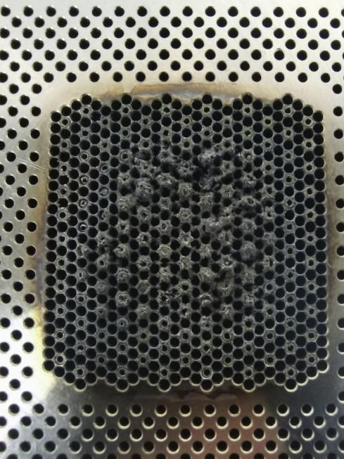
燃烧稳定性与动态特性测量：高速摄影与化学发光成像采用高速CMOS相机，记录CH、C等化学发光信号；可识别火焰振荡周期（如7ms）、旋转螺旋结构等不稳定现象；激光散射与透射测量采用激光多普勒测速（LDV）或相位多普勒粒子分析（PDA），获取粒子速度与粒径信息；适用于稀相燃烧系统[19]。图 3 高温烧蚀照片
表 2 燃烧器测量方法和主要成果发展汇总
（2）TDLAS测量与火焰标定发展现状
TDLAS技术发展现状
可调谐二极管激光吸收光谱（TDLAS）技术作为一种非侵入式光学测量手段，凭借高灵敏度、快速响应、物种特异性强等优势，已成为燃烧诊断、工业过程监测、环境检测等领域的核心技术支撑，随着现代工业向高精度、高效率、低排放方向转型以及极端工况下测量需求的不断增加，TDLAS 技术逐步朝着单谱线测量、多参数协同、宽波段适配、智能化反演的方向演进，有效解决了传统测量方法中侵入式干扰、响应滞后、多组分耦合解算困难等关键问题[20]。
早期 TDLAS 测量技术多依赖多谱线组合方案，例如通过选取 5 条低态能级分布均匀的 H₂O 近红外吸收线，采用玻尔兹曼图法可实现 1000-1600 K 温度范围的测量，相对误差控制在 1% 以内，且在超燃冲压发动机扩张段的实测中展现出良好稳定性，两次重复实验的平均偏差分别仅为 17 K 和 7 K，显著提升了对光谱参数误差和环境干扰的容忍度 [12]。随着单谱线测量技术的突破，其核心优势在于简化光学系统设计、降低多谱线耦合干扰，基于模糊 PID 控制器的单谱线迭代测量方法[21]，利用 Voigt 线型的微分方程可从单一吸收谱线中同时解耦温度、浓度和压力参数，在 300-2300 K 范围内实现了 2.5% 以内的相对温度误差，在水温恒温箱实验中温度误差控制在 5℃以下，并成功应用于对冲火焰的二维温度与水汽浓度成像 ，该方法通过迭代算法有效分离重叠谱线，避免了传统多谱线方案中基线提取复杂、系统集成繁琐的问题，此外，基于单一量子级联激光器的多组分测量方案也得到发展，利用单激光器覆盖 CO、N₂O、H₂O 的特征吸收波段，实现了大气多组分的同时测量，进一步拓展了单谱线技术的应用场景。
多参数协同测量与宽波段适配技术的发展显著提升了 TDLAS 技术的工况适应性，在燃烧诊断领域，光纤耦合的近红外 / 中红外（NIR/MIR）多波长 TDLAS 系统被成功开发，该系统集成 4 支激光器覆盖 1391.7 nm、1469.3 nm（H₂O）、4854.6 nm（CO）和 4556.2 nm（CO₂）波段，可实现燃气轮机燃烧室中温度、CO、CO₂、H₂O 的同时测量，温度测量误差小于 5%，浓度测量误差优于 10%[22]；在复杂燃烧环境中，改进型直接吸收光谱（DAS）方法通过波长分复用技术分离 OH 自由基与 H₂O 的吸收信号，利用 1502.69 nm（OH）和 1349.23-1349.27 nm（H₂O）的谱线组合，实现了甲烷 / 空气预混火焰中 OH 自由基浓度、H₂O 浓度及温度的同步测量，测量结果与模拟值高度吻合[23]。智能化反演算法与 tomography 技术的结合推动 TDLAS 技术向二维 / 三维场分布测量方向拓展，基于堆叠长短期记忆网络（LSTM）的质量分层温度成像网络（QHT-LSTM），通过 32 束激光阵列的视线测量数据，可同时输出粗精度（实时监测，temporal resolution >27 kfps）和高精度（离线分析）温度图像，在 SNR=35 dB 条件下，较传统 CNN 模型的重建误差降低 43.62%-57.80%；TDLAS 技术的工程化应用不断突破极端工况限制，在超燃冲压发动机领域，多波长 TDLAS 系统通过 16 路光路布置实现了扩张段横截面的温度测量，有效覆盖了点火、燃烧、熄火全流程的宽温度范围[24]；在工业燃烧设备中，基于 CO₂在 4.2 μm 波段的高温敏感吸收峰，采用 TDLAS 技术可测量 Hencken 平面火焰的温度与 CO₂体积分数二维分布，在空气流量 55 L/min、当量比 0.7-0.9 工况下，火焰温度接近绝热工况，为激光诊断技术提供了可靠的标定基准[25]。
火焰标定技术发展现状
火焰标定技术作为燃烧温度测量领域的核心基准支撑技术，其核心价值在于为燃烧过程温度监测提供可溯源、高精度的量值依据，是保障工业制造、能源利用、环境保护等领域温度测量准确性的关键。随着现代工业向高效、低排放、高精度方向转型，燃烧温度测量对标定技术的要求日益严苛，不仅需要满足常规工况下的精度需求，更需适配工业炉窑、燃气轮机、核退役等复杂恶劣环境的现场标定场景[26,27]。国际温标（ITS-90，是目前全球通用的温度测量标准，旨在为科学研究、工业生产等领域提供统一、准确且可溯源的温度基准，解决不同测量系统间的数据一致性问题，其基于纯物质的相变，定义了一系列固定点温度，例如：水的三相点：0.01 ℃（273.16 K），是常用的基准固定点。）作为火焰标定技术的核心溯源基准，其精准实现与传递是该领域的核心研究目标，推动火焰标定技术逐步从实验室固定装置向便携化、原位化、智能化方向演进，以解决传统技术在现场应用中量值溯源困难、测量不确定性高、工况适配性差等突出问题[28]。
早期火焰标定技术多依赖大型实验室固定装置，存在体积庞大、操作复杂、无法现场部署等局限，难以满足工业现场实时校准需求[29]。为突破这一瓶颈，欧洲 EURAMET 组织通过 EMPIR 计划支持的 EMPRESS 系列项目（14IND04、17IND04）开展了系统性研究，推动火焰标定技术发展。该系列项目由英国国家物理实验室（NPL）牵头，联合丹麦技术大学（DTU）、马德里卡洛斯三世大学（UC3M）等多家科研机构、高校及企业，共同开展研发，其成果推动了当前火焰标定技术的发展[30]。其中，由英国国家物理实验室开发的便携式标准火焰系统作为这个项目的标志性成果，改变了传统火焰标定的应用场景限制，为现场溯源提供了一定的可行方案。
标准火焰装置的设计与性能优化是火焰标定技术发展的核心载体。英国国家物理实验室开发的便携式标准火焰基于微扩散燃烧器，采用丙烷 / 空气作为燃料，通过精准控制当量比（φ=0.8-1.4），实现了 2040-2260K 的稳定温度输出[31]。该装置的核心技术创新体现在多方面：采用流量不确定度小于 0.5% 的高精度质量流量计精准控制燃料与空气配比，结合氮气协流技术有效抑制火焰扰动，使燃烧器中心 ±10mm 区域内温度均匀性显著提升；通过 Rayleigh 散射测温技术实现对 ITS-90 的直接溯源，综合测量不确定度仅为 0.5%（k=1），长期重复性优于 0.2%，性能远超传统标定装置[32]；采用模块化设计实现便携化，可在 3 小时内完成现场部署与校准，已在欧洲多国工业现场与实验室循环使用，成功应用于 FTIR 光谱仪、高光谱成像系统等燃烧测温设备的准确性验证[33]。其温度场特性经实验验证，在燃烧高度 20mm 处，不同当量比下的温度波动小于 ±3K，为红外光谱分析测量技术提供了理想的标定环境[34]。
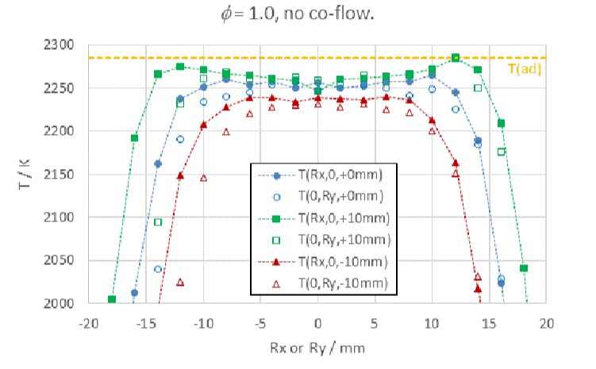
标准火焰的温度场特性与不确定性控制是火焰标定技术的核心研究内容。英国国家物理实验室通过为期 10 天的连续测试验证了该标准火焰的长期稳定性，结果表明，在 20mm 燃烧高度处，不同当量比下的火焰温度变化率均小于 0.2%，且与进气温度、大气压力等环境因素无明显相关性[35]。温度场分布测试显示，有无氮气协流条件下，火焰在水平方向 ±10mm 范围内温度均匀性良好如图 2。不确定性预算分析表明，摩尔折射率数据、流量计精度、化学平衡假设、激光稳定性等是影响标定精度的主要因素，通过优化设计与误差补偿，最终实现了 0.45%-0.5% 的综合不确定度[36]。此外，标准火焰的物种成分已通过 GASEQ 化学平衡求解器精准表征，明确了不同当量比下 CO₂、CO、H₂O 等主要燃烧产物的摩尔分数分布和温度变化图 3，为基于光谱法的温度测量仪器校准提供了基础数据支撑，也为后续在进行标定时的当量比调节提供了参考。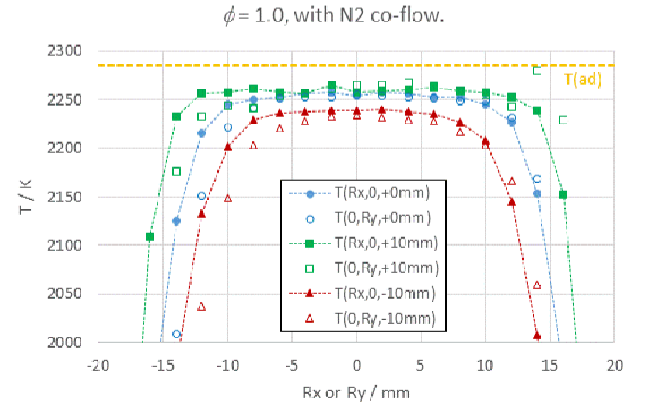
图 4 有无氮气协流温度的均匀性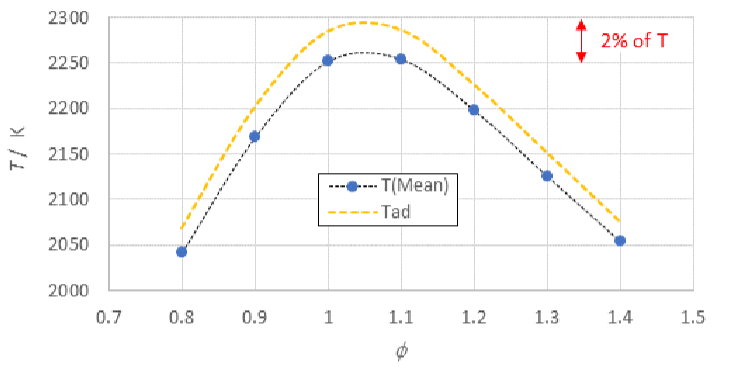
图 5 不同当量比温度的变化基于标准火焰的标定方法创新是火焰标定技术发展的重要方向。红外发射光谱标定技术凭借非侵入性优势得到广泛应用，其与标准火焰的结合形成了高效的标定体系[29]。DTU 开发的单线光谱仪与 UC3M 研发的中红外（2-5.5μm）高光谱成像系统，通过测量火焰中 CO₂、CO 和 H₂O 的特征发射谱，结合 HITEMP-2010 光谱数据库进行模拟对比，实现了火焰温度的精准反演[37]。实验验证表明，该方法测量结果与 NPL 标准火焰的 Rayleigh 散射测量结果一致性优于 1%，在 φ=1.0 工况下，中心区域温度测量偏差小于 0.23%。此外，机器学习技术的引入为火焰温度反演提供了新路径，通过 1800-2500cm⁻¹ 和 3000-4200cm⁻¹ 双波段光谱数据反演温度分布，预测误差小于 0.5%，在垃圾焚烧炉等工业场景中已得到初步应用[38]。
当前火焰标定技术虽已取得显著进展，但仍面临诸多挑战。在极端工况适配方面，超高温（>2260K）、强辐射、高速瞬态等特殊条件下的标定方法尚不完善，现有标准火焰的温度范围和环境适应性仍需拓展。
2、所阅文献的查阅范围及手段；参考资料
Fateev A, Sutton G, Rodríguez Conejo M A, et al. Validation of Emission Spectroscopy Gas Temperature Measurements Using a Standard Flame Traceable to the International Temperature Scale of 1990 (ITS-90)[J]. International Journal of Thermophysics, 2019, 40 (99): 1-16.
Qinghui M ,Colin B ,L A K , et al. Experimental measurement of the rapid mixing of fuel and air in a multi-element diffusion (非预混平面绝热火焰炉) burner[J].Combustion and Flame,2023,251DOI:10.1016/J.COMBUSTFLAME.2023.112686.
Zhigang L ,Yan X ,Zhedian Z , et al. Investigation of a novel combustion stabilization mechanism and combustion characteristics of a multi-nozzle array model combustor[J].Fuel,2022,327DOI:10.1016/J.FUEL.2022.125138.
XU Y, LI S, GAO Q, et al. Characterization on Ignition and Volatile Combustion of Dispersed Coal Particle Streams: In Situ Diagnostics and Transient Modeling[J/OL]. Energy & Fuels, 2018, 32(9): 9850-9858. DOI:10.1021/acs.energyfuels.8b01322.
LIU Z G, XIONG Y, ZHANG Z D, et al. Investigation of a novel combustion stabilization mechanism and combustion characteristics of a multi-nozzle array model combustor[J/OL]. Fuel, 2022, 327: 125138. DOI:10.1016/j.fuel.2022.125138.
PERS H, ANIELLO A, SCHULLER T. Transition from hydrodynamic flashback to wall-ignition in hydrogen-enriched laminar premixed burners[J/OL]. Combustion and Flame, 2024, 266: 113514. DOI:10.1016/j.combustflame.2024.113514.
KÖSER J, BECKER L G, GOSSMANN A K, et al. Investigation of ignition and volatile combustion of single coal particles within oxygen-enriched atmospheres using high-speed OH-PLIF[J/OL]. Proceedings of the Combustion Institute, 2017, 36: 2103-2111. DOI:10.1016/j.proci.2016.07.083.
KÖSER J, LI T, VOROBIEV N, et al. Multi-parameter diagnostics for high-resolution in-situ measurements of single coal particle combustion[J/OL]. Proceedings of the Combustion Institute, 2019, 37: 2893-2900. DOI:10.1016/j.proci.2018.05.116.
LI T, LI B, FARMAND P, et al. Motion and swelling of single coal particles during volatile combustion in a laminar flow reactor[J/OL]. Proceedings of the Combustion Institute, 2023, 39: 3333-3341. DOI:10.1016/j.proci.2022.07.111.
CORREIA RODRIGUES H, TUMMERS M J, VAN VEEN E H, et al. Spray flame structure in conventional and hot-diluted combustion regime[J/OL]. Combustion and Flame, 2015, 162: 759-773. DOI:10.1016/j.combustflame.2014.07.033.
陈昊。富氢燃料微混燃烧组织方法研究 [D]. 北京：华北电力大学，2023.
刘勋伟。含氢燃料多微混射流火焰的燃烧特性与稳焰机制研究 [D]. 北京：中国科学院大学，2021.
Venkataraman K, Lewis S E, Thomas A R, et al. F-class DLN technology advancements: DLN2.6+[C]. Vancouver: ASME Turbo Expo, 2011.
York W D, Ziminsky W S, Yilmaz E, et al. Development and testing of a low NOx hydrogen combustion system for heavy duty gas turbines [J]. Gas Turbines Power, 2013, 135 (2): 022001.
Asai T, Dodo S, Karishuku M, et al. Multiple-injection dry low-NOx combustor for hydrogen-rich syngas fuel: testing and evaluation of pilot combustor [J]. Mitsubishi Heavy Industries Technical Review, 2014, 51 (5): 1-6.
Zhang Yongsheng, Zhang Hailong, Tian Long, et al. Temperature and emissions characteristics of a micro-mixing injection hydrogen-rich syngas flame diluted with N₂[J]. International Journal of Hydrogen Energy, 2015, 40 (35): 11690-11698.
Liu Xunwei, Shao Weiwei, Liu Yan, et al. Cold flow characteristics of a novel high-hydrogen micromix model burner based on multiple confluent turbulent round jets [J]. International Journal of Hydrogen Energy, 2021, 46 (39): 20740-20758.
Si J, Fu G, Cheng Y, et al. A Quality-Hierarchical Temperature Imaging Network for TDLAS Tomography [J]. IEEE Transactions on Instrumentation and Measurement, 2022, 71: 4500710.
Agarwal S, Seifert L, Zhu D, et al. Investigations on Pressure Broadening Coefficients of NO Lines in the 1-0 Band for N₂, CO₂, Ar, H₂, O₂ and He [J]. Applied Sciences, 2023, 13 (3): 1370.
Wen J, Cao Z, Gao X, et al. Concentration Imaging of Multiple Gases from H₂O Absorption Spectrum Coupled with CFD Model [C]. IEEE International Conference on Imaging Systems and Techniques, 2022: 1-5.
So S, Park J, Yoo M, et al. Simultaneous measurement of OH radical, H₂O concentration, and temperature in a premixed CH₄/air flame using TDLAS with an improved analysis method [J]. Optics Express, 2022, 30 (18): 32031-32050.
Shi L, Endres T, Jeffries J B, et al. A Compact Fiber-Coupled NIR/MIR Laser Absorption Instrument for the Simultaneous Measurement of Gas-Phase Temperature and CO, CO₂, and H₂O Concentration [J]. Sensors, 2022, 22 (3): 1286.
Qiu S, Cao Z, Zhang X, et al. Single Spectral Line Method for TDLAS Imaging of Temperature and Water Vapor Concentration [J]. IEEE Transactions on Instrumentation and Measurement, 2023, 72: 9503611.
黄安，赵延辉，杨顺华，等。基于玻尔兹曼图法的超燃冲压发动机温度测量方法研究 [J]. 中国激光，2023, 50 (19): 1911004.
王绍杰，顾明明，齐飞，等。基于吸收光谱方法的平面非预混 非预混平面绝热火焰炉 火焰多参数测量 [J]. 燃烧科学与技术，2023, 29 (1): 44-52.
Morley G. EMPIR project hastens the adoption of phosphor thermometry technique [EB/OL]. EURAMET News, 2024-01-18.
Jones F. EMPIR project showcased in industrial thermometry workshop [EB/OL]. EURAMET News, 2021-12-14.
University of Strathclyde. EMPRESS 2 project [EB/OL]. https://www.strath.ac.uk/research/advancedformingresearchcentre/whatwedo/collaborativeprojects/empress2project/, 2021.
University of Strathclyde. EMPRESS project[EB/OL]. https://www.strath.ac.uk/research/advancedformingresearchcentre/whatwedo/collaborativeprojects/empressproject/, 2018.
Jones F. EMPRESS project workshop engages with end-users[EB/OL]. EURAMET News, 2018-04-26.
EURAMET. EMPRESS 2 project leaflet[R]. 2018-2021.
EURAMET. Enhancing process efficiency through improved temperature measurement[EB/OL]. https://www.euramet.org/, 2018.
Flanagan-Smith P. New self-calibrating thermometry for high-temperature manufacturing[EB/OL]. EURAMET News, 2023-06-22.
Sutton G. The NPL STD Flame: Operating Instructions[NPL Report ENG 65][R]. National Physical Laboratory, 2016.
National Physical Laboratory. Optical combustion thermometers: From 2040 K to 2260 K[EB/OL]. https://www.npl.co.uk/, 2025.
Jones F. Work from two EMPIR temperature projects wins best paper award[EB/OL]. EURAMET News, 2021-02-04.
EURAMET. Publishable Summary for 14IND04 EMPRESS[R]. 2018.
EURAMET. Final Publishable Report for 17IND04 EMPRESS 2[R]. 2021.
三、研究内容、技术路线、创新点
1．主要研究内容及拟解决的关键技术
（1）主要研究内容
1）结构设计，针对当前非预混平面绝热火焰炉的结构进行重新的设计加工，在内部添加水冷结构，降低其在工作时的炉体温度，使其能够承受高温的极端工作环境，优化喷嘴阵列结构、数量和间距等关键参数，在喷嘴出口处添加扩张段，使喷嘴的排布能够更加密集，实现更均匀更稳定的燃烧场分布。
2）试验研究
搭建实验台，采用激光测量方法，对火焰炉火焰进行标定测量，能够更详细的建立火焰的温度场浓度场，研究微扩散火焰结构。
对优化后的非预混平面绝热火焰炉进行研究。模拟极端工况条件，探究不同的喷嘴结构、数量和间距等参数与燃气的当量比、流量等条件对非预混平面绝热火焰炉性能的影响，根据测量的结果对结构进行不断的优化，深入分析不同因素对非预混平面绝热火焰炉性能的影响；
（2）拟解决的关键技术
1）添加水冷结构，使非预混平面绝热火焰炉能够达到3000K的燃烧温度
2）建立高温环境的标定标准，弥补现在标定标准没有覆盖高温环境的问题
2．拟采取的研究方法、技术路线、实施方案及可行性分析
（1）研究方法
1）采用TDLAS激光测量方法和PLIF测量方法。
2）通过软件仿真炉体内部的流场特征，对所优化的非预混平面绝热火焰炉炉内部结构合理性进行初步检验；再通过试验研究结构参数和燃烧条件对非预混平面绝热火焰炉炉性能的影响。
（2）技术路线与实施方案
1）技术路线：
-
针对当前非预混平面绝热火焰炉存在的问题，分析优化非预混平面绝热火焰炉的内部结构。
-
HITRAN光谱仿真技术，确定要测量的吸收峰的位置
-
模拟不同工况条件，探究不同的结构参数与燃气的当量比、流量等条件对非预混平面绝热火焰炉性能的影响，根据测量的结果对结构进行不断的优化，深入分析不同因素对非预混平面绝热火焰炉性能的影响。
-
对非预混平面绝热火焰炉的火焰结构进行更高分辨率的测量，建立火焰的温度场浓度场并更详细的研究微扩散火焰结构，为后续标定提供一个可溯源的标准化标定条件。
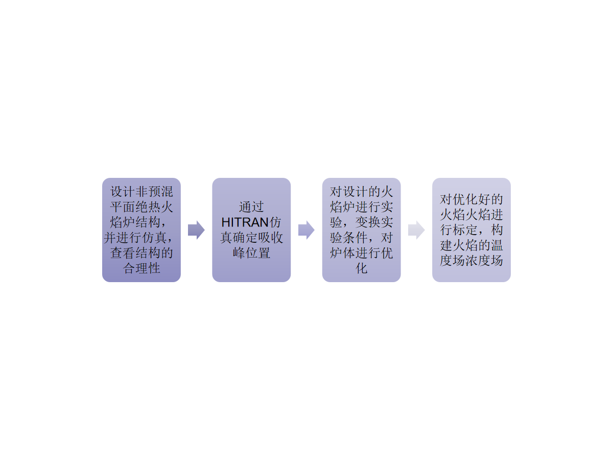
图 6 技术路线2）实施方案
1.理论分析、数值模拟，研究当前非预混平面绝热火焰炉存在的在极端工况下寿命短、燃烧不均匀不稳定等此类问题的原因，并对应进行内部结构的优化，添加水冷结构，优化喷嘴阵列结构、数量和间距等关键参数，并对结构进行仿真模拟确保可行性。
2.HITRAN仿真确定要测量的吸收峰的位置。通过HITRAN仿真，依托其高分辨率分子吸收光谱数据库，结合辐射传输模型与谱线计算方法，对火焰中不同组分在不同温度、不同的波长下的吸收 / 透射光谱进行仿真，从中选择一对吸收峰明显，不被火焰中其他组分所干扰，且相邻较近的吸收峰用来实验。
3.试验研究
试验采用激光测量方法，根据HITRAN仿真结果选择相应波长的激光器，对优化后的非预混平面绝热火焰炉进行实验研究。模拟不同工况条件，搭建实验台，探究不同的喷嘴结构、数量和间距等参数与燃气的当量比、流量等条件对非预混平面绝热火焰炉性能的影响，根据测量的结果对结构进行不断的优化，分析不同因素对非预混平面绝热火焰炉性能的影响。
4.火焰标定
对火焰进行更高分辨率的测量，研究微扩散火焰结构，能够更详细的建立火焰的温度场浓度场。对实验的过程进行总结，形成一个标准的火焰标定流程，为后续以非预混平面绝热火焰炉作为标定源的标定提供一个可溯源的标准化标定条件。
可行性分析
1）理论和技术可行
在理论研究方面，目前对于非预混平面绝热火焰炉炉结构和燃烧特性的研究为非预混平面绝热火焰炉炉的研究奠定了良好的基础；本方案已经的提出已经经过了一定的数值模拟的分析，相关的结果为本课题提供了参考和借鉴。在前期的工作中已经对改进好的非预混平面绝热火焰炉炉在燃烧甲烷和空气的条件下进行了TDLAS检测，取得了一定的数据和资料，也掌握了TDLAS的实验方法为本课题的研究提供了有力的保障
2）实验条件可行
硬件条件方面，课题组具有较为完备的TDLAS检测设备和基础的实验设施，已搭建了用于检测的TDLAS试验检测平台，拥有激光器、光电探测器、流量计等辅助设备。软件条件方面，配有FLUENT、SolidWorks等模拟软件。目前课题研究所需的硬件设备和主要软件已经基本具备，能确保项目研究工作的顺利进行。
3．论文的创新点
针对非预混平面绝热火焰炉炉普遍存在的高温极端工况下寿命短、燃烧不均匀不稳定等问题，优化当前火焰炉的内部结构，通过添加水冷结构和改变喷嘴阵列结构、数量和间距等关键参数实现更均匀的燃烧场分布、更优的排放性能和更高的燃烧温度。
采用更高分辨率的TDLAS和PLIF实验方法，对火焰进行标定，能够更详细的建立以非预混平面绝热火焰炉炉作为标定源的火焰的温度场浓度场，对微扩散火焰结构进行更深入的研究，为后续标定提供一个可溯源的标准化标定条件。
四、研究基础
1．所需实验手段、研究条件和实验条件
采用SolidWorks、FLUENT等软件对改进后非预混平面绝热火焰炉炉内部流场进行数值模拟，分析结构改变后非预混平面绝热火焰炉炉内部气体流速的变化，为后续对喷嘴的排布和结构进行改进时提供参考。用TDLAS和PLIF方法对非预混平面绝热火焰炉炉进行系统试验，构建非预混平面绝热火焰炉炉燃烧的温度场和浓度场，研究微扩散火焰结构。
（1）实验手段
采用数值模拟方法探究改变后非预混平面绝热火焰炉炉内部气体流速的变化，通过TDLAS和PLIF方法进行实验：探究喷嘴的排布和结构的变化对性能的影响，对非预混平面绝热火焰炉炉燃烧火焰进行标定，构建火焰的温度场、浓度场，研究微扩散火焰结构。
（2）研究和实验条件
课题组具有足够的场地、流量计、试验台等进行非预混平面绝热火焰炉炉的燃烧实验，拥有多个波长的激光器、光电探测器、高性能数据采集卡具备进行TDLAS、PLIF实验，具有高性能计算机进行计算仿真模拟的条件。
2．所需经费，包含经费来源、开支预算（工程设备、材料须填写名称、规格、数量）
（1）经费来源
导师项目科研经费。
（2）开支预算（详细一点）
表 3 开支预算
工控机
非预混平面绝热火焰炉炉加工
铝型材
平台加工
伺服电机
光路搭建
2650
20000
950
800
5500
7000
研华610L工控机
加工结构优化后的非预混平面绝热火焰炉
欧标40*40铝型材
可调角度平台的加工，调节范围3°
重复精度0.01mm、行程35cm
镜片、光学支架、聚光抛物面镜
激光器
光电探测器
16000
9820
1398nm激光器
700nm-2200nm光电探测器*2
流量计
减压阀
气管
水冷机
12000
1800
2000
456
氢氧气专用电控流量计
氧气专用大流量减压阀
容量12L、扬程2m
前期工作基础
（1）燃烧器和试验台设计
设计的非预混平面绝热火焰炉燃烧器结构如图 1所示，不再采用传统燃烧器的插管的结构，而是将一整块材料打孔，方便加入水冷孔，让燃料喷嘴的排布更加密集燃烧更稳定；在用于标定时也可以在外围加入保护气，防止空气的卷入。
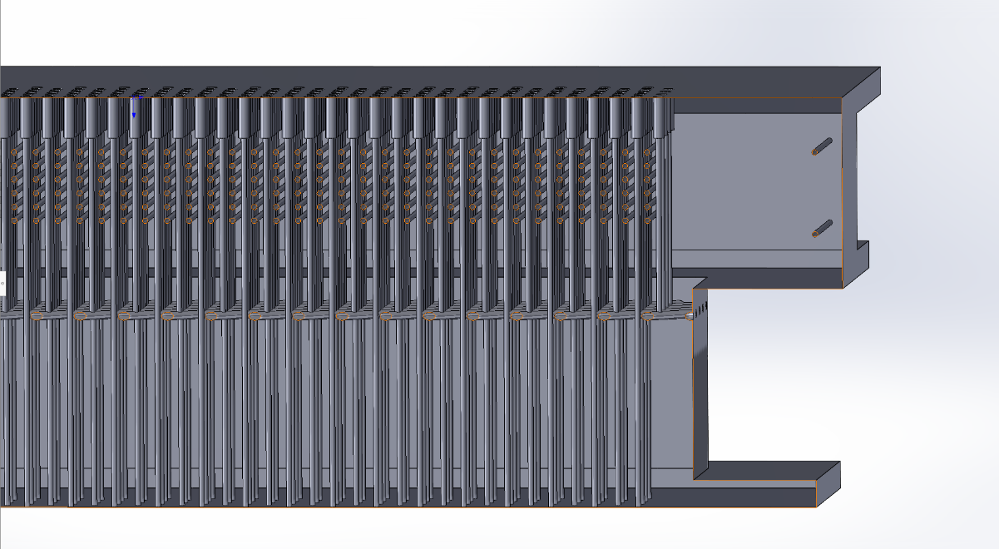
图 7 燃烧器结构截面图前期的实验并未测量氢氧火焰的数据，但是进行了一定的点火实验，查看燃烧的稳定性、气流吹出火焰的均匀性和水冷的效果。测试了在氢气流量为150SLM、氧气为75SLM的条件下燃烧情况，在燃烧1小时后，炉体温度没有明显的升高，且火焰均匀稳定，燃烧氢氧火焰的图片，如图 6所示。
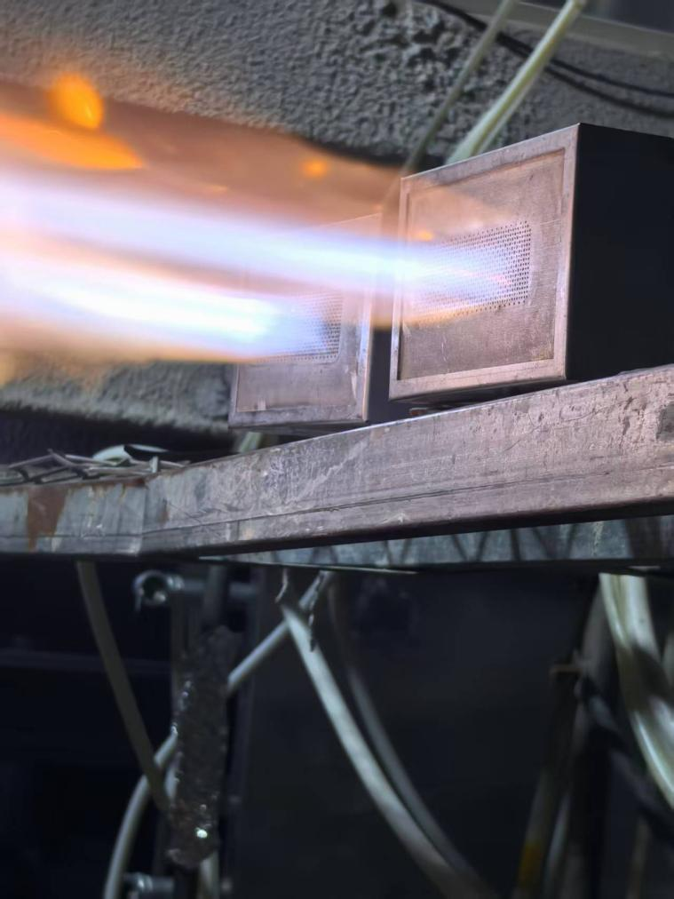
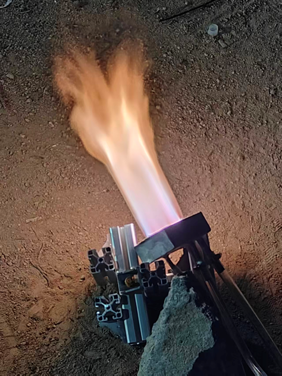
图 8 氢氧火焰燃烧情况
搭建TDLAS试验台如图 2，具体的光路搭建示意图，如图 3所示：
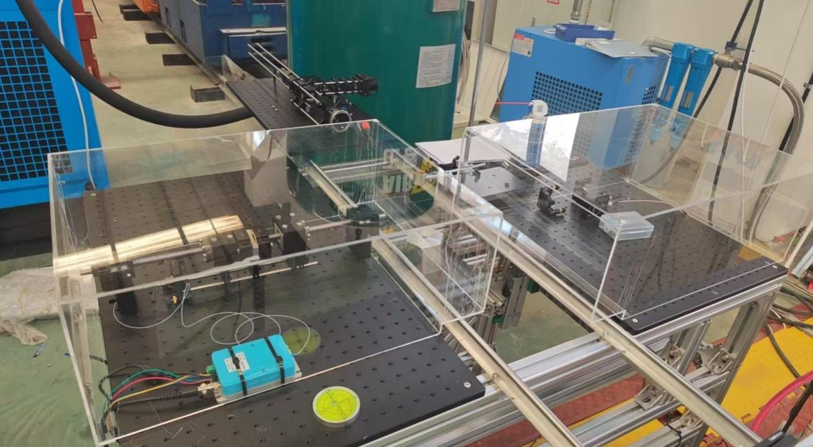
图 9 TDLAS试验台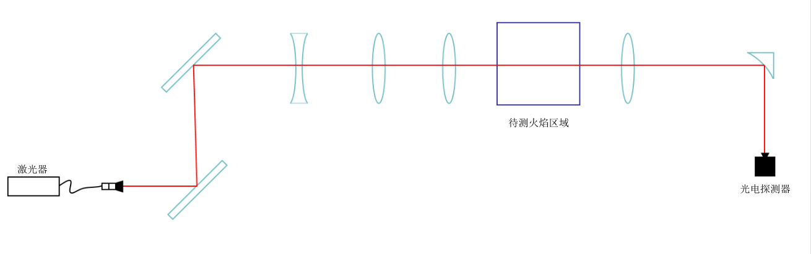
图 10 光路示意图激光由激光器发射后，首先经过两个反射镜，主要是方面调节激光的路径，让激光在经过待测区域时，尽可能地与火面水平；一个凹透镜、两个凸透镜的组合镜片组合主要是为了条件激光光斑的大小，让激光在经过待测区域时，能够尽可能地细，有更高的分辨率，
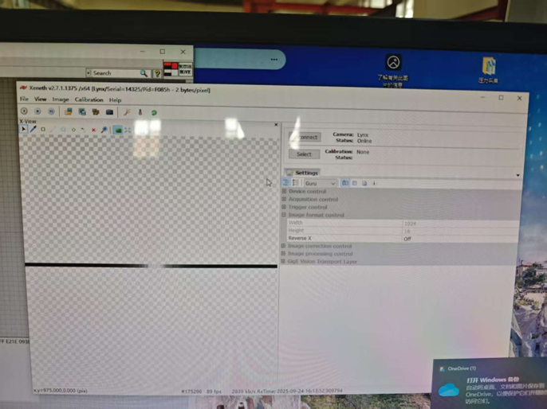
在调节完后经过红外线性相机拍摄，确定光斑的大小。图 11 红外线性相机拍摄照片
光谱仿真
为选取水的吸收峰通过hitran仿真水在不同波长下的吸收峰，同时要排除可能的其他成分的干扰等问题，选择水相邻的两个吸收峰来计算温度，我们仿真了水在波长为1398nm、1368nm、1392nm附近水的吸收光谱，最终选择在1398nm激光器下，扫描7153.75和7154.35两个波数的吸收峰用于计算温度，其中7153.75作为高温峰、7154.35作为低温峰，在这个波束范围内的光谱仿真图如图 4所示。图中横坐标为波数，纵坐标为吸收强度。在光谱中展宽直接决定光谱的分辨率和峰形，是光谱仿真中的核心物理参数
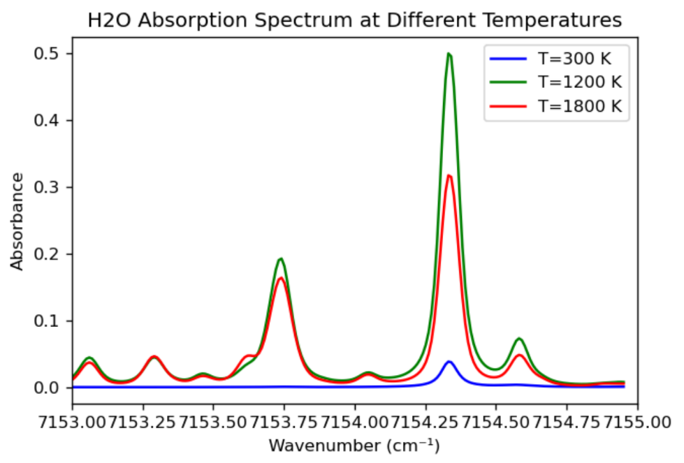
图 12 光谱仿真（3）燃烧器参数计算
对燃烧器在用于标定时的燃烧情况进行了一定的参数计算，主要计算内容包括：温度、热流密度、焓通量等等。
其中
热流密度是指单位时间内通过单位面积的热量，是表征热量传递强度的物理量，计算公式为：
$$\begin{array}{r}
q = \frac{dQ}{dA \bullet dt}\#(3.1)
\end{array}$$
焓通量是指单位时间内通过单位面积的焓流量，其数值等于焓值差与质量通量的乘积，计算公式为：
$$\begin{array}{r} q_{h} = \frac{dH}{dA \bullet dt}\#(3.2) \end{array}$$
参数计算结果在当量比1，混合气体为氢氧气，质量通量为4kg/㎡/s时，如图 5所示：
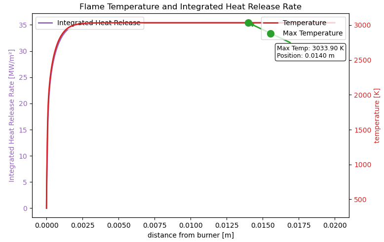
图 13 温度和热流密度仿真在当量比为1，变化气体的质量通量，结果如表 3表 4所示：
表 4 氢氧火焰计算
表 5 氧乙炔火焰计算
实验结果处理（背景在文件中找）
对非预混平面绝热火焰炉炉的结构进行了前两次结构优化，进行仿真模拟分析，并在试验台上对其进行了TDLAS实验。前期实验燃料使用甲烷-空气，固定空气流量为55SLM,选定当量比为0.8、1.0、1.2，沿水平方向对火焰进行扫描，测得的火焰温度场数据。三个原始的吸收光谱如图 6，分别是在空气流量为55SLM条件下当量比分别是0.8、1.0、1.2时激光穿过火焰1.5mm高度处的吸收光谱图。
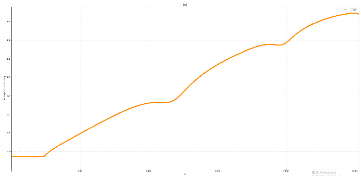
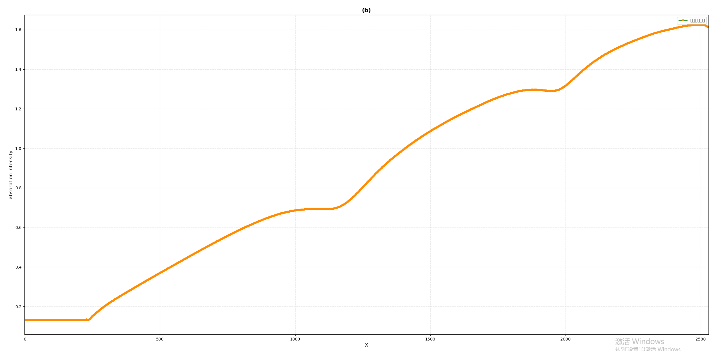
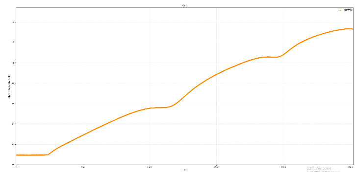
图 14 吸收光谱图将吸收后的原始数据，经过背景扣除、波数转换后的结果如图 7所示
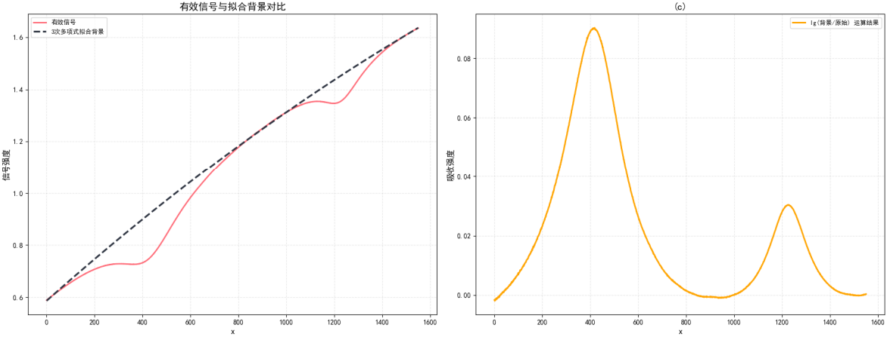
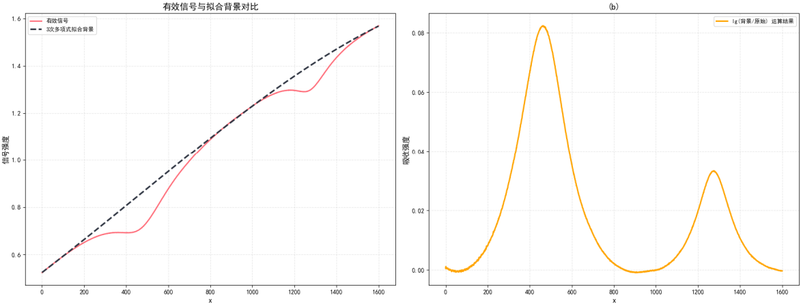
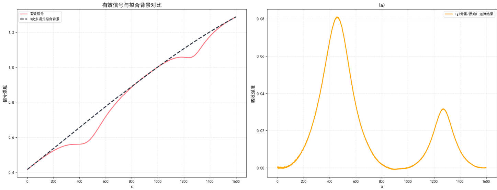
图 15 去除背景后的数据图去除背景后，两个峰一个为高温峰一个为低温峰，根据玻尔兹曼公式，两个峰之间的面积比就可以求出相应的温度值，则扫描过一个完整的火焰面后就可以求出得出非预混平面绝热火焰炉炉的完整的温度场分布图，则在当量比分别为0.8、1.0、1.2时的非预混平面绝热火焰炉炉温度场分布图如图 8。
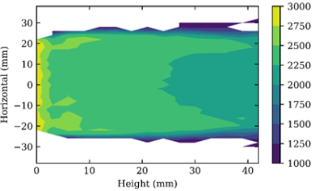
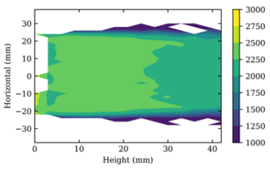
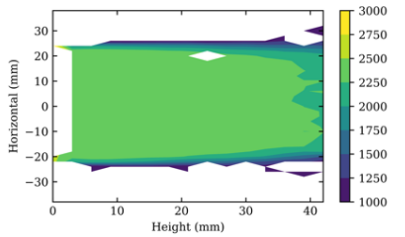
图 16 甲烷-空气温度场
五、工作计划
工作量估计
（时数）
1
2
3
4
5
6
7
确定非预混平面绝热火焰炉炉优化方案，进行建模、数值模拟及优化设计
非预混平面绝热火焰炉炉加工和试验台搭建
HITRAN仿真确定要测量的吸收峰
进行初步实验验证实验方法的可行性和炉体设计的效果
编写文献综述和开题报告
开始对设计好的非预混平面绝热火焰炉炉进行试验和标定
撰写毕业论文准备答辩
260
310
170
300
160
880
330
2024.12-2025.3
2025.3-2025.5
2025.5-2025.6
2025.7-2025.11
2025.11-2025.1
2025.1-2026.8
2026.9-2026.12
优化非预混平面绝热火焰炉炉的结构，仿真内部流场气流的均匀性
完成试验台的搭建和初始非预混平面绝热火焰炉炉的加工
选择在1398nm激光下对7153.75和7154.35峰线对进行测量
燃烧甲烷空气，非预混平面绝热火焰炉炉的燃烧情况进行测量
提交开题报告
燃烧氢氧火焰，对火焰数据进行详细测量，建立详细的微扩散火焰温度场浓度场，分析影响因素
完成毕业论文的写作，准备毕业答辩
山东科技大学硕士研究生学位论文开题报告评分表
| 评审项目 | 分值 | 评 分 标 准 | 得分（百分制） | |
| 一、选题依据 | 30分 | 21~30分 | 选题有较强的理论意义、实用价值，深刻的学术研究内涵。 | |
| 11~20分 | 选题有一定的理论意义、实用价值，有一定的学术研究内涵。 | |||
| 0~10分 | 选题缺乏理论意义和实用价值。 | |||
| 二、理论基础和专门知识 | 20分 | 15~20分 | 较好的掌握坚实宽广的理论基础和系统专业知识 | |
| 6~15分 | 基本的掌握坚实宽广的理论基础和系统专业知识 | |||
| 5分以下 | 未能掌握坚实宽广的理论基础和系统知识 | |||
| 三、选题难度及先进性 | 30分 | 21~30分 | 研究课题属本学科发展方向并居前沿位置，具有自己独特的思考、研究课题具有较强的先进性 | |
| 11~20分 | 研究课题属本学科的发展方向，并具有先进性。 | |||
| 0~10分 | 研究课题与本学科的发展方向先进性不明显，难度欠佳。 | |||
| 四、文字表达 | 10分 | 8~10分 | 条理清晰，分析严谨，文笔流畅 | |
| 4~7分 | 条理较好，层次分明，文笔较流畅 | |||
| 3分以下 | 写作能力较差 | |||
| 五、口头报告 | 10分 | 8~10分 | 论文严密、逻辑性强、表达清楚。 | |
| 3~7分 | 基本概念清晰、层次分明。表达较清楚。 | |||
| 3分以下 | 表达较差 | |||
| 总分 | ||||
开题评审小组组成：
年 月 日
开题报告正文（原报告 PDF：proposal.pdf｜Word 源：硕士学位论文开题报告及论文工作计划-new.docx）